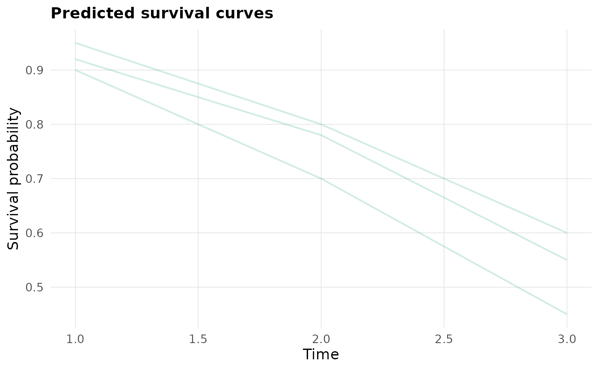
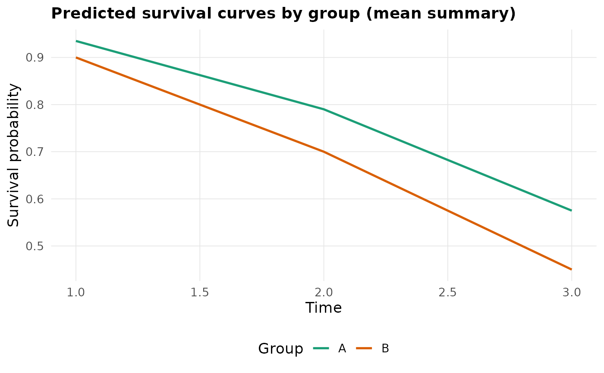

Plots one or more predicted survival curves from a survival-probability
matrix. By default, each row of S is shown as an individual curve. If
a group vector is supplied, curves are summarized by group using the
requested aggregation function.
Usage
plot_survmat(
S,
times = NULL,
group = NULL,
ids = NULL,
summary_fun = c("mean", "median"),
show_individual = NULL,
alpha = 0.2,
linewidth = 0.7,
title
)Arguments
- S
A
surv_mat: numeric matrix/data.frame of survival probabilities.- times
Optional numeric vector of time points corresponding to columns of
S. If omitted, times are inferred from column names of the form"t=<time>".- group
Optional vector of group labels of length
nrow(S). When supplied, grouped summary curves are plotted.- ids
Optional integer vector of row ids to subset before plotting.
- summary_fun
Aggregation for grouped curves; one of
"mean"(default) or"median".- show_individual
Logical. If
NULL(default), individual curves are shown only whengroupis omitted. IfTRUE, individual curves are overlaid beneath the grouped summary curves.- alpha
Alpha transparency for individual curves (default
0.2).- linewidth
Line width for plotted curves (default
0.7).- title
Plot title. If missing, an automatically generated title is used. Pass
NULLto omit the title entirely (e.g., for journals requiring caption-only figures).
Examples
S <- data.frame(`t=1` = c(0.95, 0.90, 0.92),
`t=2` = c(0.80, 0.70, 0.78),
`t=3` = c(0.60, 0.45, 0.55),
check.names = FALSE)
plot_survmat(S)

plot_survmat(S, group = c("A", "B", "A"))
